CampusSave
Application Web React 18 & Mobile Flutter 3 connectée à Google Cloud Firestore via une architecture CQRS-lite REST Node.js 20, avec Enchères Dégressives Smart Decay, Living Ticket Rotatif 30s HMAC-SHA256, Holo-Radar 3D WebGL et IA Générative.
Remerciements
Nous tenons à exprimer notre profonde gratitude au corps professoral et à l'équipe pédagogique de l'ESSECT Montfleury, notamment aux enseignants des modules d'Intégration Web et de Développement d'Applications Mobiles, pour la rigueur méthodologique, conceptuelle et technique qu'ils nous ont transmise tout au long de cette 3ème année de Licence E-Business.
Nos remerciements s'adressent également aux commerçants et restaurateurs du quartier universitaire de Montfleury ayant accepté de répondre à nos enquêtes de terrain préliminaires, nous permettant ainsi de concevoir une plateforme fidèle à leurs contraintes opérationnelles réelles (gestion des surplus périssables, rapidité de validation au comptoir, clarté des transactions).
Résumé Exécutif
Résumé (Français)
CampusSave est une plateforme omnicanale innovante (Web React 18 et Mobile Flutter 3) dédiée à l'éradication du gaspillage alimentaire autour du campus de l'ESSECT Montfleury (Université de Tunis). En reliant les étudiants aux commerces de proximité dans un rayon piéton strict de 3 km, CampusSave permet aux restaurateurs de commercialiser leurs surplus quotidiens à prix fortement remisé grâce à un algorithme d'enchère dégressive dynamique calculé en temps réel (Smart Decay).
La solution garantit une sécurité transactionnelle de niveau bancaire : réservations atomiques à concurrence stricte (banc de test à 20 acheteurs simultanés), intégration du bac à sable de paiement électronique Konnect Network, et validation physique au comptoir par un Living Ticket cryptographique rotatif toutes les 30 secondes basé sur HMAC-SHA256, immunisé contre les captures d'écran. La plateforme intègre en outre un radar cartographique 3D WebGL (MapLibre), un générateur d'offres par Intelligence Artificielle générative avec analyseur dialectal tunisien, une carte de fidélité éco-digitale à 5 tampons et une vitrine d'impact environnemental public certifiée selon les standards officiels de la FAO et de l'US EPA.
Executive Summary (English)
CampusSave is an innovative omnichannel platform (React 18 Web and Flutter 3 Mobile) engineered to eradicate food waste around the ESSECT Montfleury university campus in Tunis. By bridging university students with local neighborhood food vendors within a strict 3 km radius, CampusSave empowers merchants to rescue daily unsold meals at discounted rates via a real-time temporal Dutch auction algorithm (Smart Decay).
The platform guarantees institutional-grade transactional integrity: atomic stock reservations under extreme concurrency (20 simultaneous buyers benchmark), secure digital payments powered by the Konnect Network sandbox, and counter redemption secured by a dynamic 30-second HMAC-SHA256 rotating Living Ticket QR code that entirely defeats screenshot fraud. Additional smart mechanics include a WebGL 3D urban radar (MapLibre), an AI-driven multimodal offer generator featuring a Tunisian culinary fallback parser, a 5-stamp digital eco-loyalty passport, and a public campus impact dashboard certified against official FAO and US EPA environmental conversion standards.
Table des Matières
Chapitre 1 : Introduction, Contexte & Objectifs Pédagogiques
1.1 Contexte Universitaire & Problématique du Gaspillage à Montfleury
Le quartier universitaire de Montfleury à Tunis accueille chaque jour plusieurs milliers d'étudiants fréquentant l'ESSECT et les facultés avoisinantes. Malgré cette forte concentration démographique, deux paradoxes économiques et environnementaux majeurs coexistent au quotidien :
- Précarité étudiante et pouvoir d'achat : Une proportion substantielle d'étudiants fait face à un budget quotidien d'alimentation restreint, les contraignant souvent à des choix nutritionnels de faible qualité ou à sauter des repas.
- Gaspillage alimentaire structurel : Les cafétérias, boulangeries, sandwicheries et restaurants de Montfleury préparent quotidiennement des repas et viennoiseries dont une fraction non négligeable (estimée entre 10% et 20% des volumes produits) reste invendue à l'heure de fermeture et finit irrémédiablement dans les bennes à ordures, faute de canal de distribution rapide et sécurisé.
1.2 La Vision CampusSave : Triple Impact Économique, Écologique et Social
CampusSave a été imaginé pour transformer cette perte sèche en une opportunité tripartite vertueuse :
• Pour le Commerçant : Monétisation de denrées périssables vouées à la destruction, acquisition d'une nouvelle clientèle étudiante fidèle et affirmation d'une démarche RSE de quartier.
• Pour l'Environnement et l'Université : Réduction mesurable de l'empreinte carbone universitaire, chaque gramme de nourriture sauvé évitant l'émission de gaz à effet de serre liés à la décomposition organique.
1.3 Objectifs Académiques et Techniques du Projet
Dans le cadre du cursus Licence E-Business 3ème année, ce projet intégrateur répond à un ensemble d'objectifs académiques et techniques ambitieux :
- Concevoir et implémenter une architecture monorepo propre séparant la logique de domaine partagée, l'API backend et les clients frontend.
- Maîtriser le développement web moderne sous React 18 / Tailwind CSS et le développement mobile natif sous Flutter 3 / Dart.
- Implémenter des transactions atomiques robustes sous Google Cloud Firestore et sécuriser les échanges via des jetons JWT enrichis de Custom Claims.
- Intégrer des tiers de confiance réels : passerelle de paiement Konnect Sandbox, stockage de médias Cloudinary, et moteur d'IA Google Gemini.
Chapitre 2 : Analyse Fonctionnelle & Spécification des Besoins
2.1 Cartographie des Acteurs
Le système identifie trois rôles stricts et hermétiques, modélisés dans l'énuméré immuable ROLES de @shared/constants.js :
| Acteur | Rôle Système | Responsabilités Principales |
|---|---|---|
| Étudiant | STUDENT |
Explore les offres géolocalisées, visualise la dégressivité des prix, procède au paiement Konnect, présente son Living Ticket rotatif au comptoir, accumule des tampons éco-responsables et évalue ses commandes. |
| Commerçant | MERCHANT |
Soumet sa boutique pour validation dans un rayon de 3 km, publie ses invendus via l'éditeur magique IA, prévisualise sa courbe Smart Decay, et valide les retraits en scannant le QR code étudiant via sa caméra ou par saisie manuelle. |
| Administrateur | ADMIN |
Supervise la plateforme depuis un tableau de bord global, étudie les pièces justificatives des boutiques candidates, approuve ou suspend les commerçants et utilisateurs malveillants. |
2.2 Couverture Exhaustive des 8 Fonctionnalités Obligatoires (M1 à M8)
| Code | Exigence Obligatoire | Implémentation Web & Mobile |
|---|---|---|
| M1 | Authentification & Profils | Inscription avec sélection de filière ESSECT, JWT Bearer, RBAC client & serveur. |
| M2 | Enrôlement & Validation Commerce | Onboarding commerçant avec MapPicker $\le$ 3 km, console administrative de validation. |
| M3 | Publication d'Offres & Smart Decay | Formulaire de création d'offres, créneau horaire $\le$ 6 h, courbe Smart Decay interactive. |
| M4 | Catalogue, Recherche & Filtres | Recherche avec debounce 300 ms, filtres par catégorie, prix et tri par distance piétonne. |
| M5 | Réservation 10-Min & Concurrence | Transaction Firestore atomique, compte à rebours 10 min, libération automatique du stock. |
| M6 | Paiement Konnect Network | Initialisation de session de paiement, gestion des 3 états et confirmation dual-path. |
| M7 | Living Ticket QR & Scanner | QR rotatif 30s HMAC-SHA256, code de secours 6 chiffres, scan caméra et compostage atomique. |
| M8 | Tableaux de Bord par Rôle | Dashboards analytiques dédiés Étudiant, Commerçant (7j/30j) et Administrateur. |
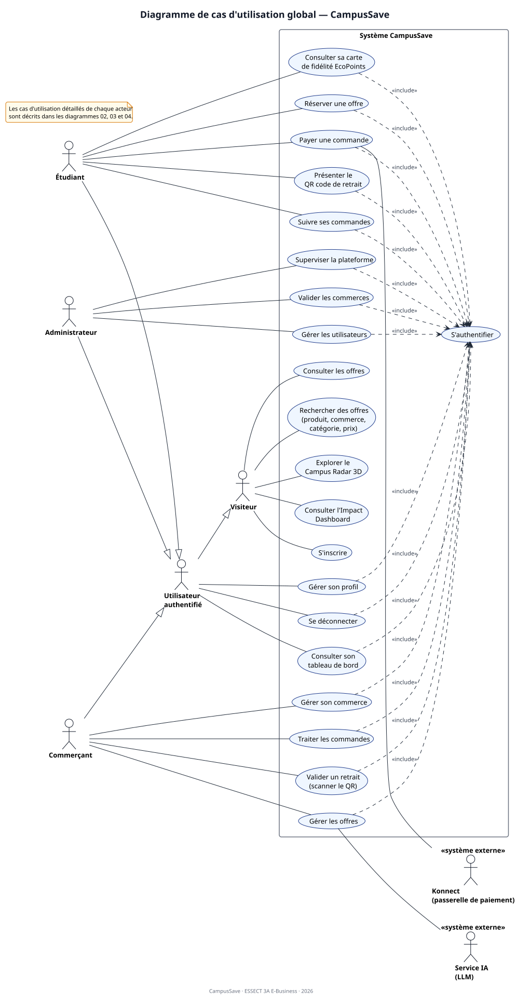
2.3 Description Détaillée des 4 Fonctionnalités Innovantes Bonus (B1 à B4)
- B1 — Montfleury Holo-Radar 3D WebGL : Projection cartographique inclinée à 60° sous MapLibre GL, extrudant en 3D les bâtiments du quartier, matérialisant l'ESSECT par un repère néon vert et les boutiques par des prismes hexagonaux colorés selon l'urgence horaire.
- B2 — Carte de Fidélité Éco-Digitale (5 Tampons) :** Pass virtuel inspiré d'Apple Wallet. 1 tampon = 20 EcoPoints = 1 repas sauvé. Un cycle de 5 tampons (100 points) génère un coupon
-20%, tandis que les paliers majeurs (300 et 600 points) offrent un panier surprise 100% gratuit. - B3 — Panier Surprise Gacha & Animation Unboxing : Boîtes mystères avec 3 tiers de rareté (Commun, Rare, Légendaire). À la validation du retrait, une cinématique en 5 étapes s'exécute avec retour haptique sur mobile.
- B4 — Magic Offer Publisher IA + Parseur Tunisien : Moteur d'extraction automatique utilisant l'API Google Gemini, secondé par un parseur de secours déterministe (
fallbackParser) capable d'interpréter le vocabulaire culinaire tunisien (makloub, chapati, baguette farcie, ojja, lablabi, kafteji).
Chapitre 3 : Architecture Logique, Physique & Choix Technologiques
3.1 Justification de l'Architecture Omnicanale 3-Tiers Partagée
Pour répondre aux contraintes des étudiants (mobilité sur smartphone et confort de consultation sur ordinateur portable) et des commerçants (tablette de caisse et smartphone pour scanner les commandes), nous avons conçu une architecture 3-tiers découplée centrée sur une API REST unifiée :
┌──────────────────────────────────────┐ ┌──────────────────────────────────────┐
│ CLIENT WEB REACT 18 │ │ CLIENT MOBILE FLUTTER 3 │
│ Vite, Tailwind CSS, MapLibre WebGL │ │ Dart 3, Provider, Mobile Scanner │
└──────────────────┬───────────────────┘ └──────────────────┬───────────────────┘
│ │
│ (Lectures temps réel onSnapshot / Stream) │
▼ ▼
┌─────────────────────────────────────────────────────────────┐
│ GOOGLE CLOUD FIRESTORE (NoSQL) │
│ Base réactive dénormalisée multi-région │
└─────────────────────────────▲───────────────────────────────┘
│
│ (Mutations transactionnelles sécurisées)
│
┌─────────────────────────────┴───────────────────────────────┐
│ API REST TRANSACTIONNELLE NODE.JS 20 / EXPRESS │
│ Firebase Admin SDK, Zod Validation, Crypto HMAC │
└─────────────────────────────▲───────────────────────────────┘
│
┌────────────────────────┴────────────────────────┐
▼ ▼
┌───────────────────────────┐ ┌───────────────────────────┐
│ KONNECT NETWORK │ │ CLOUDINARY & GEMINI │
│ Passerelle Paiement Dinar │ │ CDN Médias & Modèle LLM │
└───────────────────────────┘ └───────────────────────────┘
| Composant | Technologie Retenue | Alternatives Évaluées | Justification Décisive pour CampusSave |
|---|---|---|---|
| Backend REST | Node.js 20 (LTS) & Express | Django, Laravel | Modèle asynchrone non-bloquant E/S ; Firebase Admin SDK ; partage de code JS universel avec le Web. |
| Frontend Web | React 18 & Vite | Angular, Vue 3 | Virtual DOM réactif, Recharts, MapLibre GL, compilation rapide Vite & hooks réactifs Firebase. |
| Frontend Mobile | Flutter 3.x (Dart 3) | React Native, Kotlin | Moteur graphique Skia/Impeller 60 fps natif ; accès direct caméra/haptique pour le scanner QR. |
| Base de Données | Google Cloud Firestore | PostgreSQL, MongoDB | NoSQL temps réel distribué ; abonnements réactifs (onSnapshot) parfaits pour les catalogues et tickets. |
| Sécurité & Validation | Zod v3 & Crypto natif | Joi, Yup, bcrypt | Inférence statique TS/JS ; cryptographie HMAC-SHA256 intégrée sans dépendance externe vulnérable. |
3.2 Le Pattern CQRS-lite : Écritures REST vs Lectures Réactives Firestore
Pour concilier la réactivité instantanée du Web modernisé et l'intégrité absolue des transactions financières, CampusSave implémente un pattern architectural de ségrégation des responsabilités de lecture et d'écriture (CQRS-lite) :
- Canal des Commandes (Écritures strictes via l'API REST) : Les applications Web et Mobile ne disposent d'aucun droit d'écriture direct sur Firestore (
allow write: if false;). Chaque écriture passe par l'API REST Node.js qui exécute des transactions atomiques (db.runTransaction()). - Canal des Requêtes (Lectures réactives synchronisées) : Les clients Web et Mobile s'abonnent directement aux collections autorisées (
offers,orders,merchants) via les écouteurs natifs de Firestore (onSnapshot()en JavaScript,StreamSubscriptionetsnapshots()en Dart).
3.3 Module Métier & Mathématique Partagé (/shared)
Pour éviter toute divergence de calcul entre le Web, le Mobile et le Serveur, l'ensemble des constantes, algorithmes d'arrondi et règles écologiques sont centralisés dans le répertoire racine /shared :
money.js (arithmétique entière en millimes), pricing.js (calcul d'enchère unifiée), loyalty.js (grades végétaux), et impact.js (facteurs carbone officiels).
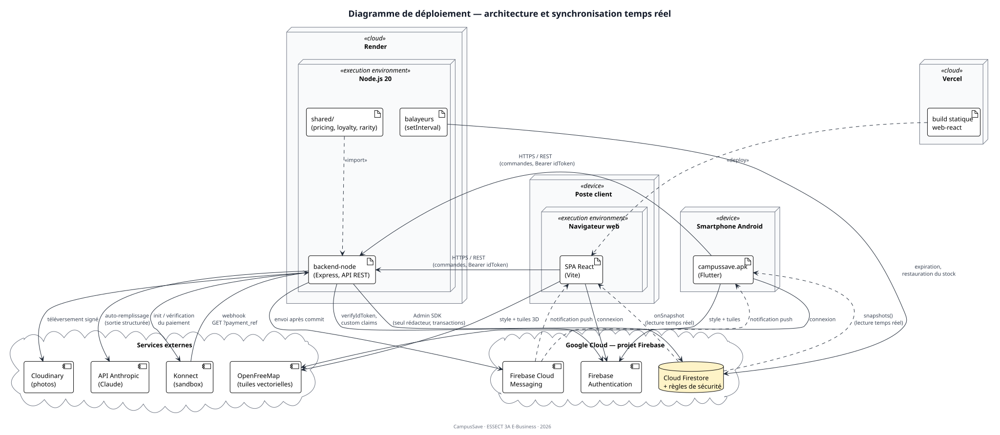
Chapitre 4 : Conception Détaillée, Modélisation UML & Schéma NoSQL
4.1 Modélisation Statique par Diagrammes de Classes UML
La modélisation orientée objet de CampusSave est découpée en trois sous-domaines métier cohérents :
1. Domaine des Utilisateurs et Fidélité
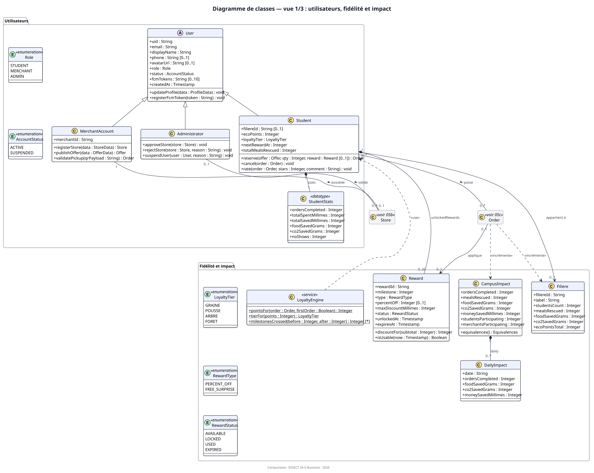
2. Domaine des Commerces, Offres et Paniers Surprises
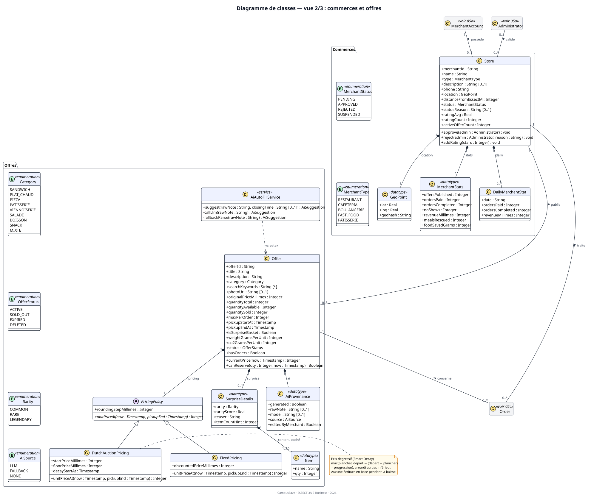
3. Domaine des Commandes, Transactions et Retrait
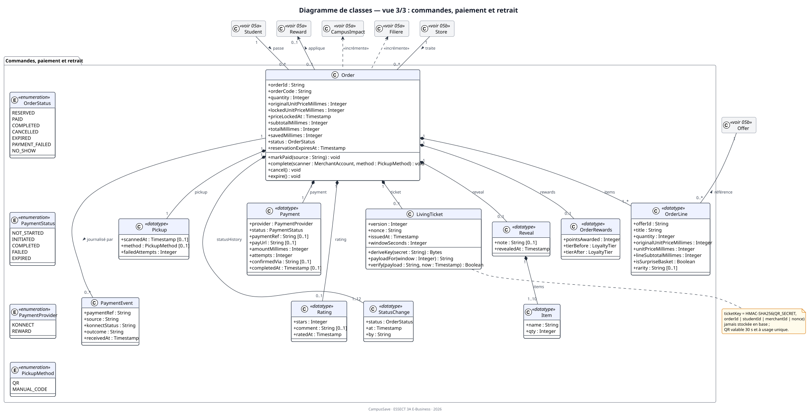
4.2 Machine à États Finis du Cycle de Vie des Commandes

4.3 Diagrammes de Séquence de Référence
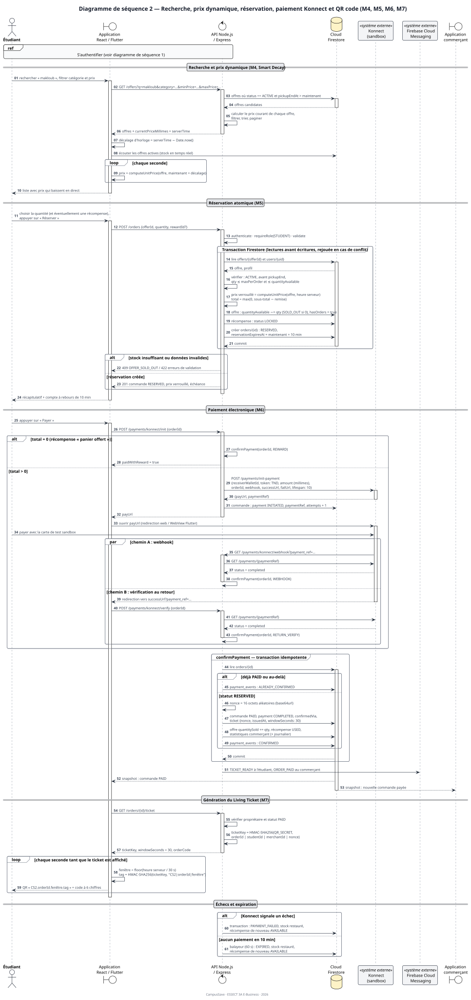

Chapitre 5 : Algorithmes Intelligents, Mécaniques Métier & Sécurité
5.1 Arithmétique Monétaire Entière et Parité Multi-Runtime
L'utilisation de nombres à virgule flottante pour des transactions financières constitue un anti-pattern notoire susceptible d'introduire des erreurs d'arrondi. En Tunisie, la monnaie officielle est le Dinar Tunisien (TND), divisé en 1000 millimes. CampusSave applique le principe strict de la monnaie entière :
Exemple : 3800 millimes devient rigoureusement 3,800 DT sur le Web React, le Mobile Flutter et dans l'API Node.js.
5.2 Moteur de Tarification Dynamique Dégressive (Smart Decay)
L'algorithme Smart Decay résout le problème de scalabilité : faire varier le prix de centaines d'offres chaque seconde sans déclencher des millions d'écritures en base de données. Le prix unitaire à un instant t est calculé par la formule déterministe :
- Si $t < t_{start}$, $P(t) = P_{depart}$.
- Si $t \ge t_{end}$, $P(t) = P_{plancher}$.
- Le pas de discrétisation $\Delta = 100\text{ millimes}$ assure des arrondis marchands naturels.
5.3 Gestion de la Concurrence Extrême par Transactions Atomiques
Toute réservation sollicite db.runTransaction() dans Firestore. Le stock est lu et décrémenté atomiquement. Le banc de test simulant 20 acheteurs simultanés sur un stock de 5 portions confirme exactement 5 succès et 15 rejets contrôlés en HTTP 409 OFFER_SOLD_OUT.
5.4 Cryptographie du Living Ticket Anti-Capture d'Écran
Pour interdire la revente illicite ou les captures d'écran transmises entre étudiants, le ticket de retrait génère un code QR rotatif :
Signature = HMAC_SHA256( Key = ticketNonce, Data = orderId + ":" + Window(t) )
Lors du scan, le serveur vérifie la signature pour la fenêtre courante $W(t)$ ainsi qu'avec une tolérance d'horloge de $\pm 1$ fenêtre ($W(t) \pm 1$). La comparaison est exécutée en temps constant (crypto.timingSafeEqual) pour prévenir toute attaque par canal auxiliaire. Un verrouillage automatique s'enclenche après 5 échecs consécutifs (HTTP 423).
5.5 Parseur d'Offres IA & Fallback Culinaire Tunisien
Le commerçant peut saisir ou dicter librement ses invendus. Le modèle Google Gemini extrait automatiquement les attributs. En cas d'indisponibilité ou de coupure réseau, notre fallbackParser garantit 100% de disponibilité grâce à sa base culinaire locale (*Makloub, Chapati, Baguette farcie, Ojja, Lablabi, Kafteji*), validée par 10 scénarios réels de tests unitaires.
Chapitre 6 : Réalisation, Interfaces & Expérience Utilisateur (Web & Mobile)
6.1 Design System Griddle : Crème, Rouge Tomate & Moutarde
La charte livrée en production est la même sur le Web React et sur l'application Flutter : un style « street-food éditorial » lisible en plein soleil, avec des contours encre et des polices condensées. Tous les textes respectent un plancher de 13 px.
- Crème (
#FAF3E6) et biscuit (#EDE6D7) : fonds chauds qui remplacent le noir ; les cartes sont détourées d'un trait encre. - Rouge tomate (
#DA0711) : couleur d'action (boutons, prix, onglet actif). - Moutarde (
#FFD000) et feuille (#1F7A3A) : accents pour les points, les alertes et l'impact écologique. - Polices : League Gothic (titres), Oswald (texte), Bowlby One SC et Knewave (autocollants), Space Mono (codes et chiffres).
6.2 Parcours Étudiant : Catalogue, Holo-Radar 3D & Living Ticket

6.3 Espace Commerçant : Publication IA, Courbe Smart Decay & Scanner Caméra

6.4 Application Mobile Flutter Native
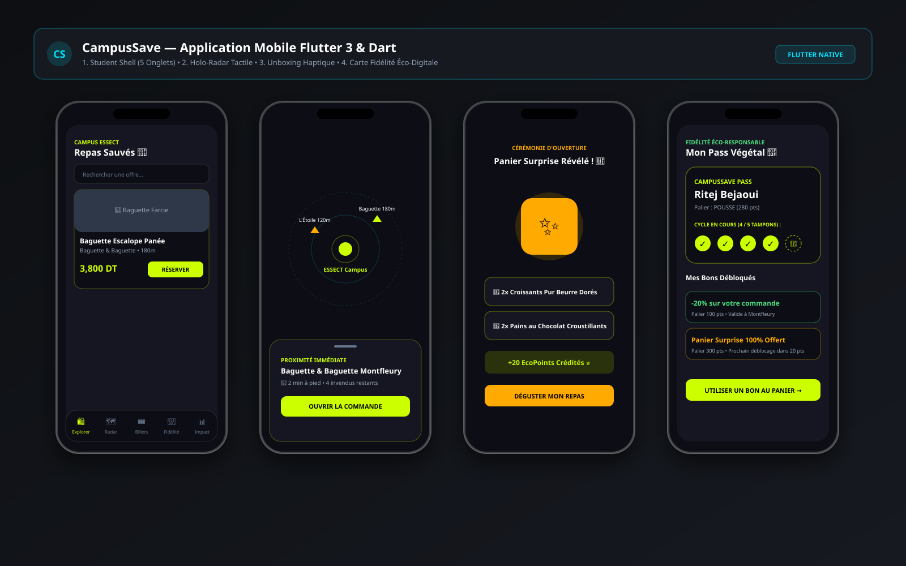
6.5 Tableaux de Bord par Rôle, Gamification & Défi Inter-Filières
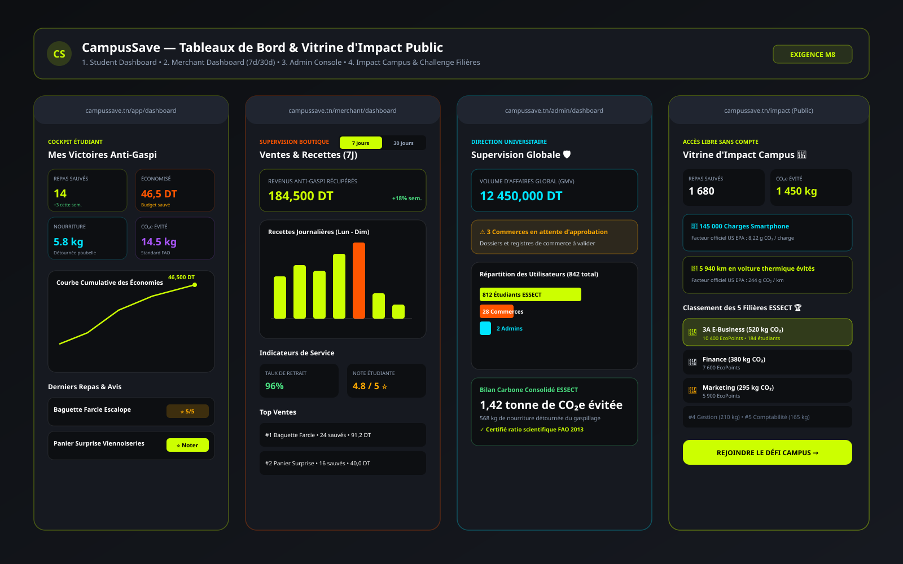
6.6 Finitions : Identité Visuelle, Notifications Push, Démo Auto-Réinitialisée & Radar Épuré
Les dernières itérations ont porté sur la cohérence de bout en bout (web, mobile, serveur) plutôt que sur de nouvelles fonctions :
- Identité visuelle : la mascotte (sac de courses diplômé et son chiot) devient l'icône de l'application Android, le favicon du site, le logo de la page de connexion et le bouton de téléchargement de l'APK.
- Notifications push de bout en bout : l'appareil (navigateur ou téléphone, comptes réels comme comptes de démonstration) s'enregistre auprès du serveur ; les messages portent une priorité haute et le canal Android
campussave_high_importancepour s'afficher en bannière avec son. Une fiche « Notifications push » du profil permet d'activer et de tester l'envoi (POST /users/me/fcm-testrenvoie un diagnostic). - Démo qui ne se vide jamais : toutes les 6 h le serveur vérifie qu'il reste des offres actives et réinitialise la démo si besoin ou après 24 h. Toutes les données de démonstration (commandes, points, recettes, impact) sont calculées à partir des mêmes commandes et ne se contredisent plus.
- Catalogue épuré : le simulateur Smart Decay est replié sous le catalogue, les filtres secondaires se replient sur téléphone, et chaque carte n'affiche qu'une pastille (urgence ou rareté).
- Holo-Radar lisible : la carte 3D s'ouvre sans panneau superposé (introduction, programme du jour et fiches des commerces sont repliés), avec une barre compacte et des rayons défilants sur téléphone.
- Mode démo et compte réel : le mobile reprend le sélecteur du site ; en mode réel, un nouveau commerçant est dirigé vers le dépôt de son dossier.
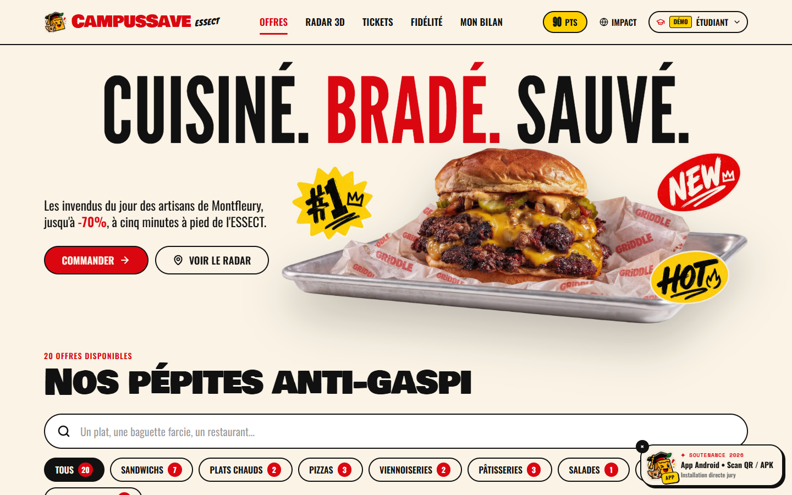
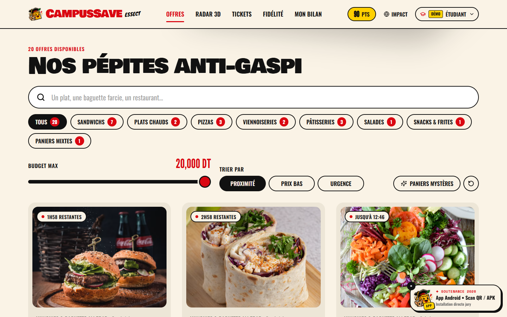
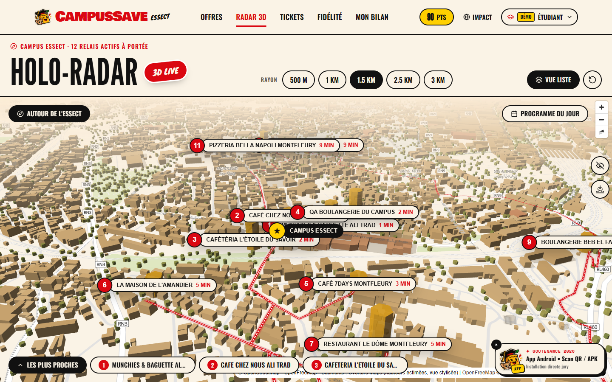
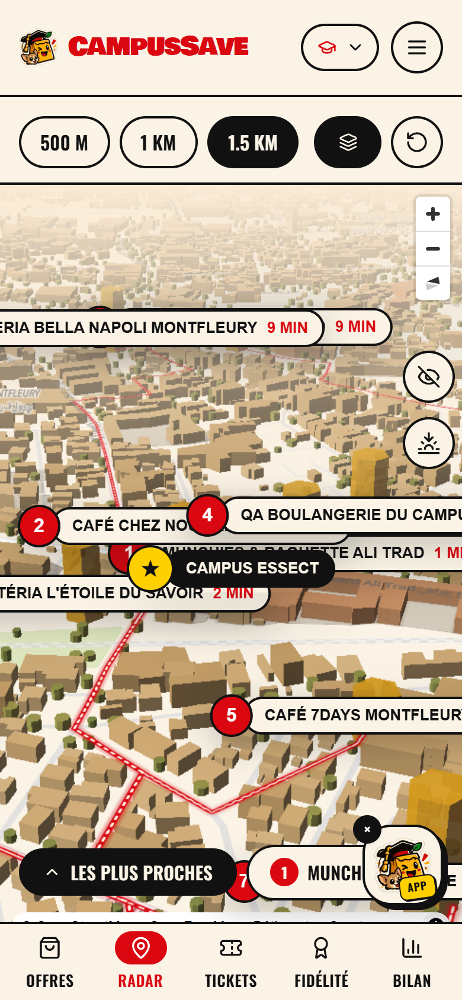
Chapitre 7 : Validation Expérimentale, Tests Automatisés & Bilan Qualité
7.1 Synthèse de la Suite de Tests Automatisés
La robustesse industrielle de CampusSave est attestée par une couverture de tests automatisés exhaustive exécutée sans régression à chaque jalon :
| Composant Testé | Framework / Moteur | Tests Passés | Taux de Succès |
|---|---|---|---|
| API Backend REST Node.js | Node.js Test Runner (v22) | 146 / 146 | ✔ 100 % |
| Contrôle de bout en bout de l'API (160+ vérifications) | qa:sweep sur base en mémoire isolée | 169 / 169 | ✔ 100 % |
| Domaine Partagé (/shared) | Node.js Test Runner (v22) | 41 / 41 | ✔ 100 % |
| Application Mobile Flutter | flutter_test / Dart 3 | 21 / 21 (2 ignorés : serveur requis) | ✔ 100 % |
| Analyse Statique Flutter | flutter analyze | 0 avertissement | ✔ 100 % Clean |
| Compilation Web React | Vite 5 (Production Build) | 0 erreur (2730 modules) | ✔ 100 % Succès |
| TOTAL CONSOLIDÉ | Suite Complète Multi-Runtime | 208 TESTS + 169 CONTRÔLES API | ✔ 100 % SUCCÈS |
7.2 Détail des Suites de Tests Critiques
- Tests Mathématiques de Tarification : 25 vecteurs de non-régression validant la formule Smart Decay sans divergence entre Node.js et Dart.
- Tests de Concurrence Transactionnelle :** Collision massive de 20 acheteurs sur un stock de 5 portions : exactement 5 succès et 15 rejets 409.
- Tests de Cryptographie Living Ticket : Validation des 5 vecteurs de signature HMAC-SHA256, tolérance d'horloge $\pm 30\text{ s}$ et verrouillage après 5 échecs.
- Tests du Parseur Culinaire Tunisien : 10 scénarios réels d'extraction d'offres en langage naturel.
- Tests d'Intégrité du Jeu de Données : 6 commerces Montfleury, 20 offres et 5 filières ESSECT.
7.3 Audit de Sécurité & Absence de Secrets
- Zéro secret ou clé API commité dans l'historique Git (vérification
.gitignoreet variables.env.example). - Validation systématique de toutes les requêtes HTTP par des schémas
Zodstricts. - Protection des en-têtes HTTP via
Helmetet limitation du débit viaexpress-rate-limit.
Conclusion Générale & Perspectives
Le projet CampusSave démontre avec succès la faisabilité technique, l'utilité sociale et la pertinence économique d'une plateforme anti-gaspillage alimentaire dédiée à une communauté universitaire. En combinant des technologies de pointe (React 18, Flutter 3, Node.js 20, Firestore, MapLibre GL 3D, Intelligence Artificielle), notre binôme a livré une solution complète, robuste et immédiatement déployable.
2. Expansion Inter-Universitaire : Extension du modèle aux campus universitaires voisins de Tunis (Le Belvédère, La Manouba, El Manar).
3. Prédiction des Invendus par Machine Learning : Entraînement d'un modèle prédictif anticipant les surplus des commerçants selon les conditions météo et le calendrier des examens.
Bibliographie & Références
- Food and Agriculture Organization (FAO), Food Wastage Footprint: Impacts on Natural Resources (Technical Report), Rome, Nations Unies, 2013.
- United States Environmental Protection Agency (US EPA), Greenhouse Gas Equivalencies Calculator, Office of Atmospheric Programs, Washington D.C., 2024.
- Konnect Network, Documentation Officielle de l'API de Paiement en Ligne (Sandbox & Webhooks), Tunis, 2026.
- Google Firebase, Firestore Security Rules & Custom Claims Documentation, Mountain View, 2026.
- MapLibre GL, 3D Vector Tile Specification & Fill-Extrusion Rendering, 2026.
- React.js & Flutter Documentation, Modern State Management & Declarative Routing, Meta Platforms & Google LLC, 2026.